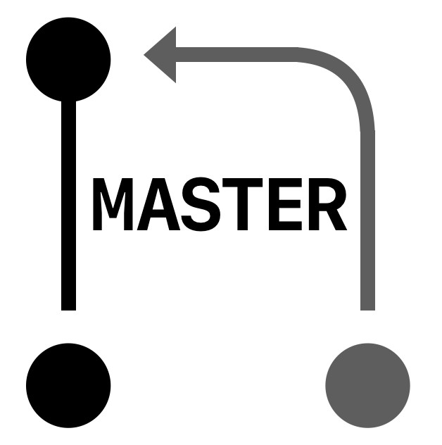
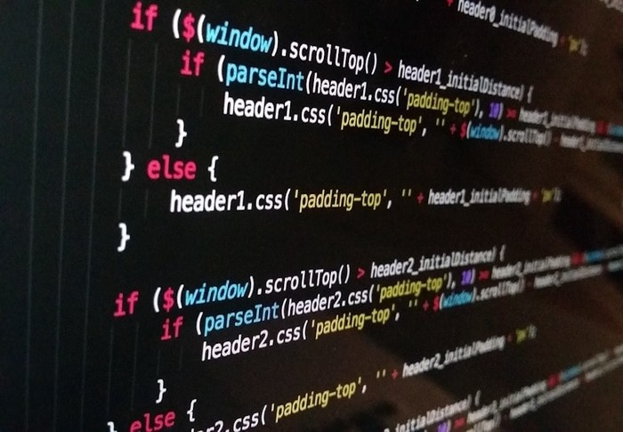

검증된 커리큘럼,최고의 멘토와 함께
마스터즈코스 레벨4까지 수료하고,취업에 도전하세요!

마스터즈 코스는 무엇이 다른가요?
1. 마스터의 1:1 코드리뷰와 멘토링
프로그래머에게 코드리뷰는 가장 효율적이로 빠르게 성장할 수 있는 방법입니다. 마스터즈 코스는 탄탄한 실무경력의 마스터들에게 지속적으로 멘토링과 꼼꼼한 코드리뷰를 받으며 여러분들을 가장 빠르게 성장시켜 드립니다.
- 
2. 최고의 커리큘럼과 미션방식의 학습
마스터즈 코스는 최고의 커리큘럼을 가지고 있습니다. 국내 최고의 개발자들과 지속적인 커뮤니티와 교류 활동을 통해 살아있는 최고의 커리큘럼을 구성합니다.
필요한 지식을 단계적으로 실습과 미션을 해결하면서 본인의 것으로 만들 수 있습니다. 물론 그 과정에서 올바른 학습이 이뤄졌는지 마스터들의 피드백이 함께 합니다 3. 기초와 응용의 콜라보
클래스별 응용 프로그래밍 경험 뿐만 아니라, 각 클래스 분야별로 반드시 필요한 기초 지식(자료구조 및 알고리즘, 운영체제, 네트워크 등)을 함께 배울 수 있습니다. 기초 지식 또한 단순 주입식 교육이 아닌 이해를 돕기 위한 미션을 직접 경험하고 해결하는 방식으로 진행합니다.
본인에 맞는 클래스를 선택할 수 있습니다.
<레벨2부터 클래스 선택가능>
1. 모바일(iOS)
iOS 클래스는 Swift 언어에 익숙해지고 iOS SDK와 Xcode 개발 환경을 경험하고 앱을 출시하는 것을 목표로 합니다. Swift 중심으로 진행하지만 원한다면 Objective-C 언어에 대해서도 학습할 수 있습니다. 프로그래밍 기초 개념부터 iOS 앱 개발을 위한 디자인 가이드라인에 맞춰 자신만의 앱을 설계하는 경험도 필요합니다. 코코아-터치 프레임워크를 활용하면서 함수중심 프로그래밍, 객체중심 프로그래밍 방식으로 클린코드 작성하기 위해 더 좋은 구조를 만드는 것을 경험합니다. 더 나아가 모바일 개발자끼리, 서버 개발자와 협업하는 역량을 키우기에 적합합니다.
2. 웹 프론트엔드
HTML,CSS를 잘 이해하고 있으면서 JavaScript를 전문적인 수준으로 개발할 수 있는 프론트엔드 개발자를 만드는 것이 목표입니다.
코드스쿼드에서는 웹프론트엔드 개발자라면, 프레임워크나 라이브러리 없이도 JavaScript언어의 특징을 충분히 활용하면서 주어진 요구사항을 능숙히 구현해낼 수 있는 개발자를 만들기 위해 노력합니다. 마스터즈 코스에 참여함으로써 올바른 프로그래밍 디자인, 클린코드, 더 좋은 UX를 고려한 UI개발을 생각하는 웹프론트엔드 개발자가 될 수 있습니다.3. 웹 백엔드(JAVA)
웹 백엔드 과정은 JAVA 언어를 기반으로 웹 애플리케이션 개발 전반에 대한 경험을 하는 것을 목표로 합니다. JAVA 언어를 기반으로 진행한다고 JAVA에 국한된 내용을 배우는 것에 집중하는 것이 아니라 프로그래밍의 근간이라 할 수 있는 테스트, 리팩토링, 객체지향 프로그래밍을 학습하는 것에 초점이 맞춰져 있습니다. 웹 애플리케이션 개발 또한 Spring과 같은 프레임워크 사용법을 학습하는 것이 목표가 아니라 웹의 근간이라 할 수 있는 HTTP 학습, 클린코드를 구현할 수 있는 역량을 키우는 것을 목표로 합니다.
단계별 학습을 통해 취업이 가능한 레벨4까지!
레벨4 수료시 취업이 가능한 기술역량을 갖게 되며, 기업과 헤드헌팅 업체등을 통해 채용지원을 돕습니다.
각레벨은 8주코스로, 레벨2부터 시작하면 레벨4까지 6달이 소요됩니다.
- Lv.1
프로그래밍 입문!
프로그래밍 경험이 전혀 없는 분들과 함께 합니다.
프로그래밍의 기초개념인 변수,반복,조건,함수등을 단계적으로 배웁니다.
코드스쿼드에서는 별도 레벨1을 모집하진 않지만, 레벨1을 학습하실 수 있도록 온라인 학습을 2018년 3월에 오픈합니다 - Lv.2
탄탄한 프로그래밍 실력과 응용프로그래밍 기초
한 가지 프로그래밍 언어를 깊이 있게 학습합니다. 언어별 특징을 깊이있게 경험하면서 소프트웨어 개발에 필요한 프로그래밍 핵심역량을 익힙니다. 또한 모바일이나 웹개발에 필요한 기초지식을 배웁니다.
- Lv.3
다양한 실무 응용프로그래밍 학습
모바일(iOS), 웹프론트엔드, 웹백엔드(JAVA) 기술 분야의 기본 지식을 배웁니다. 각 분야의 서비스를 응용할 수 있는 주니어 개발자로 성장하는 단계입니다.
- Lv.4
실전 1-2년차 수준의 학습
클래스별로 완성도 있는 소프트웨어 구현 방법을 경험하면서 본격적인 실무 역량을 키워나갑니다. 설계부터 배포까지 실전에서 필요한 소프트웨어 개발 과정을 경험하게 됩니다.
마스터즈 코스의 하루
월요일부터 - 금요일까지 매일 10시부터 6시까지 full-time 학습합니다.
화요일과 목요일에는 오프라인 강의와 멘토링이 있습니다.
월요일, 금요일에는 같은 시간대에 온라인 코드리뷰와 온라인 Q&A를 가질 수 있습니다.
최고의 마스터로부터 직접 코칭을 받을 수 있습니다.
분야별 전문 마스터들과 함께 배우며, 토론할 수 있습니다.
또한 개인면담 신청을 통해 개인성장등 다양한 코칭을 받을 수도 있습니다.

정호영 : 알고리즘, 클라우드, 데이터베이스 마스터
한양대학교에서 데이터베이스분야 박사학위를 취득하고, LG전자 CTO부문 소프트웨어플랫폼연구소에서 스마트TV, 안드로이드 개발에 참여했습니다. NHN NEXT에서 데이터베이스 및 기초과목을 가르쳤으며, 네이버랩스에서 순환근무를 하며 짧지만 행복한 개발자 생활을 하기도 했습니다. Amazon Web Services 에서 Senior Technical Trainer로 근무했으며 어린이, 초중고학생, 대학생, 직장인, 개발자 등 다양한 연령대에 걸쳐 풍부한 강의 경력을 가지고 있습니다. 미래부 강연에서는 기립박수를 받은 적도 있으며, Amazon재직시에는 까다로운 국내 대기업 강의에서 강의평가 전원 만점(5.00/5.00)을 여러번 받은 경험도 있습니다. SQLTAG라는 멋진 ms-sql 커뮤니티에서 숙련된 DBA분들에게 많은 것을 배우고 있고, 다양한 분야에 걸쳐 배우기 좋아하는 호기심 많은 개발자입니다. 취미는 주짓수와 게임을 하고 있습니다.

김정 : 모바일 마스터
금융권 콜센터와 KT 코어망 통신장비에 들어가는 멀티미디어 프로토콜 스택 개발을 했습니다. 자체 시스템 모니터링과 cPCI 분산 컴퓨팅 아키텍처도 설계했습니다. 현재 국내 최장수 macOS/iOS 개발자 커뮤니티 OSXDEV.org 운영진이며 NEXT에서 모바일 전임교수를 하며 모바일 분야 인재양성을 했습니다. 오로라플래닛 모바일 스타트업 운영 경험과 레진코믹스에서 모바일 서비스개발 경험이 있습니다. 삼성전자, 네이버, 금결원, GE, 빙글 등 국내 여러회사에서 모바일 컨설팅/iOS 강의 경력이 있습니다. UX를 고려한 앱 프로토타이핑 개발방법과 모바일 서비스 아키텍처, 배포/테스트자동화 등에 관심이 많습니다. 10년넘게 커뮤니티 활동과 개발관련 자료를 여러 개발자들에게 공유하고 있습니다.

윤지수 : 웹프론트엔드 마스터
네이버에서 Core UI 개발과 개발팀장을 했습니다. NEXT에서 웹 UI 전임교수를 하며 인재양성을 하기도 했으며, SK Planet 에서 기술분야의 유일한 Master레벨로 근무했습니다. 삼성전자, 씨티은행, 삼성생명, NAVER, 위메프등 국내 여러회사에서 웹프론트엔드 강의 경력이 있으며, NAVER, SK Planet,우아한형제들,스마마일게이트의 인터과 신입사원 교육을 설계하고 멘토로 참여했습니다. Deview 2016에서 웹프론트엔드 강의를 하기도 했습니다. UX를 고려한 웹 프론트엔드 개발방법과 Clean한 웹프론트엔드 개발방법에 관심이 많습니다.

박재성 : 자바 웹백엔드, 애자일 마스터
네이버에서 블로그 개발에 참여했으며 개발팀장을 했습니다. 프로젝트 참여자 전체(기획자, 디자이너, 개발자, QA등)가 하나의 서비스에 집중할 수 있는 환경에서 일하고 싶어 XLGames에서 웹 서버스 개발파트 리더를 맡기도 했습니다. 현재 NEXT에서 웹 백엔드, 소프트웨어 공학 전임교수를 하며 인재를 양성하고 있습니다. 2005년부터 자바 백엔드 관련해 현업 개발자에게 실무 경험을 전달하는 다수의 경험을 가지고 있으며, NAVER(2014년)와 스마일게이트(2017년) 신입 사원 교육을 설계하고 멘토로 참여한 경험이 있습니다. 최근에는 패스트캠퍼스, 우아한형제들에서 현업 개발자들을 대상으로 테스트, 리팩토링, 객체지향 설계에 대해 교육을 진행했습니다. 개발자들과 소통하고 지식을 공유하는 것을 좋아해 2001년부터 자바지기 커뮤니티, 2012년부터 SLiPP 커뮤니티를 운영하고 있으며, 다양한 주제로 현업 개발자들과 오프라인 스터디를 진행하고 있습니다. 효과적으로 일하고 학습할 수 있을까에 대해 관심이 많으며, 일과 삶의 균형을 맞추며 살아갈 것인가에 대한 관심도 많습니다.
자주묻는질문
- Q. 01> 레벨2부터 레벨4까지 전체 커리큘럼 예상 기간이 있나요?A> 모든 레벨은 8주입니다(2달). 레벨2부터 레벨4까지한다면 6달로 예상합니다.
- Q. 02> 레벨테스트가 있나요?A> 모집을 할 때마다 해당 레벨에서 제시하는 문제를 제출해야 합니다. 모집레벨에 수준이 맞는지를 마스터와 오프라인 만남을 통해 최종결정합니다.
- Q. 03> 레벨승급은 언제 어떻게 이루어지나요?A> 새로운 레벨과정이 시작될 때 마다, 이전에 승급이 가능한지 판단합니다. 레벨의 과정을 잘 진행하고 계시다면 다른레벨로 승급하는데는 문제가 없습니다.
- Q. 04> 문제해결(미션) 방식이 더 좋은 교육 방식인가요?A> 교육 진행방식은 마치 개발 회사 현장에서 선배들과 일하면서 배우는 방식과 비슷합니다. 수준별 역량을 보고 필수적으로 경험해야할 것들을 커리큘럼으로 만들어서 단계별 미션으로 제공합니다. 코드스쿼드 멤버라면 언제든지 마스터에게 질문을 할수도 있고, 필요한 강의를 요청할 수도 있습니다.
- Q. 05> 주말에 공간 활용은 가능한가요?A> 수강생은 토요일에만 장소를 사용할 수 있습니다.일요일은 개방하지 않습니다.
- Q. 06> 수강료 정책이 궁금합니다.A> 코드스쿼드의 내부 상황에 따라 수강료는 변동될 수 있습니다. 현재는 한달에 80만원 수준입니다